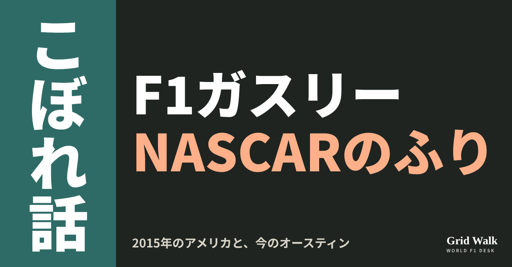
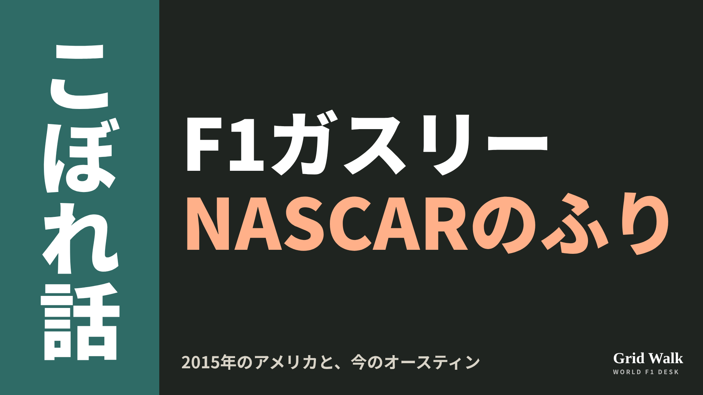
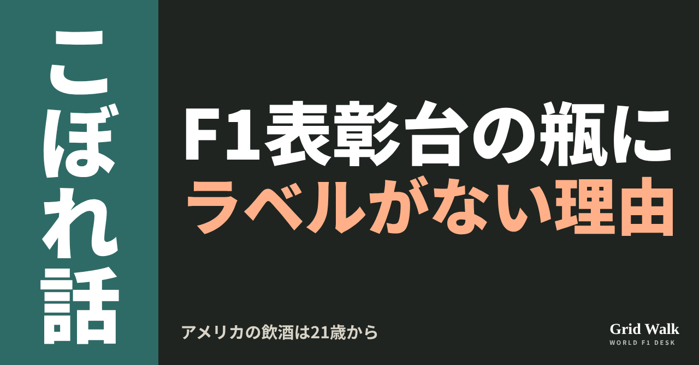
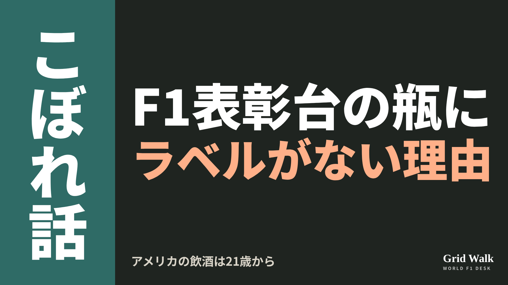
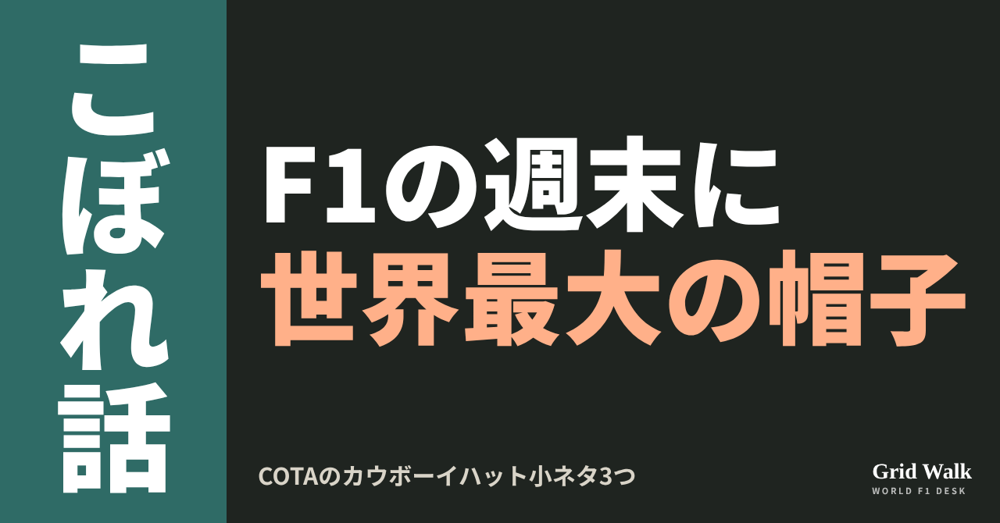
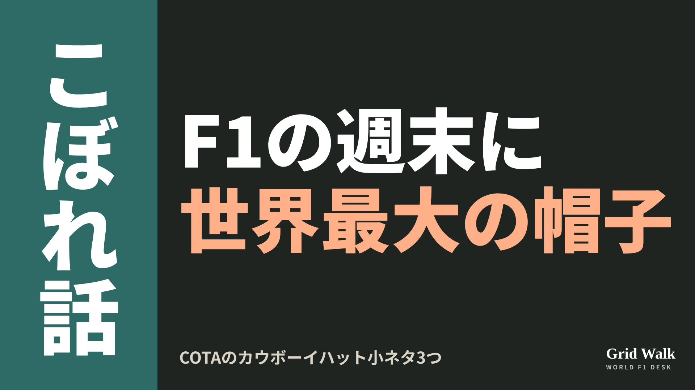
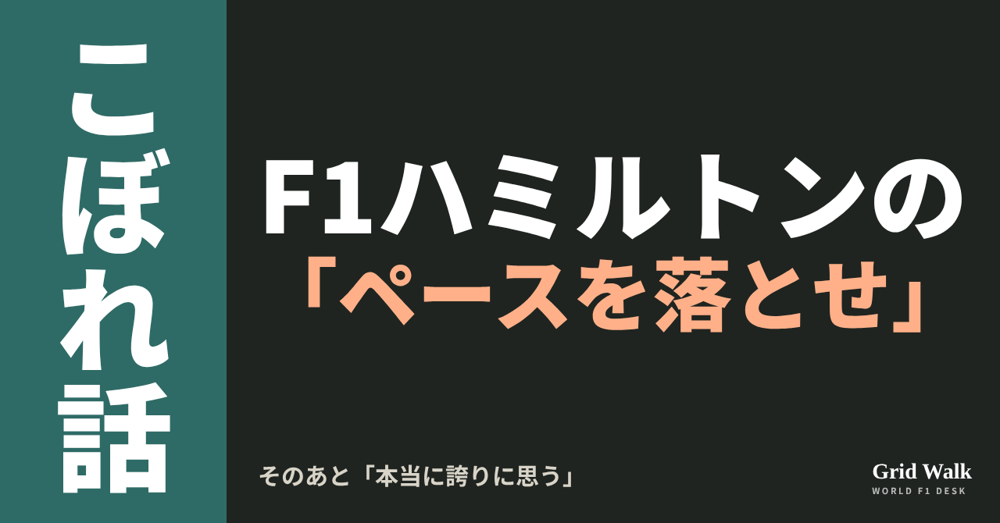
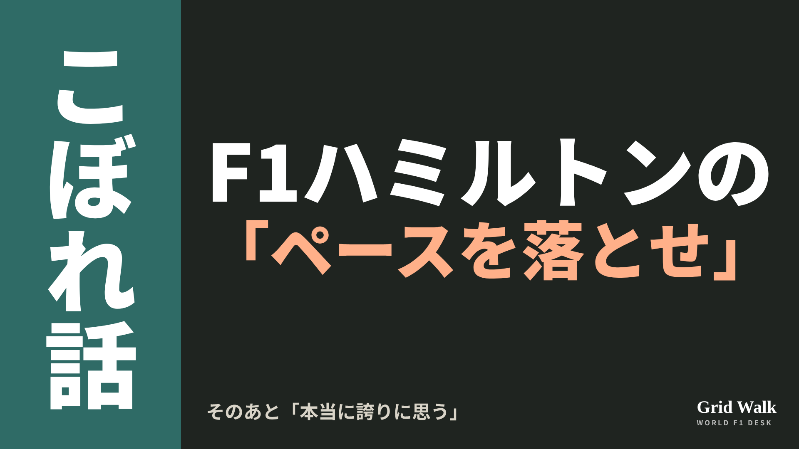
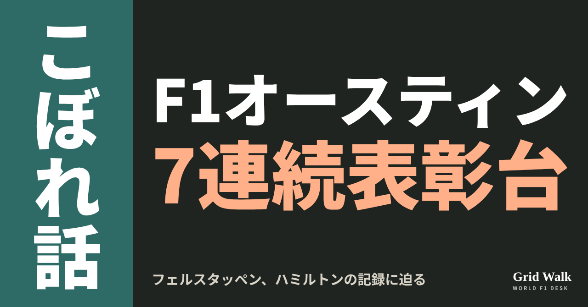
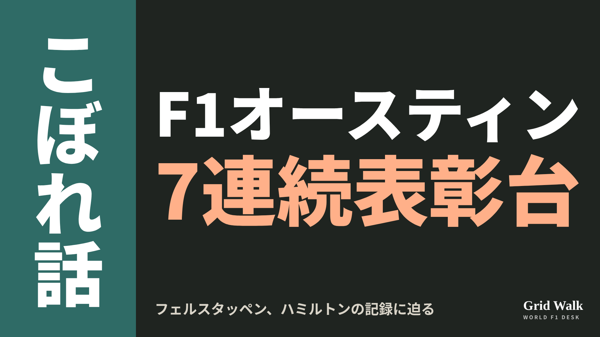

<meta charset="utf-8"><title>OFF GRID 6本 note貼り付け</title>
<style>
/* one column of numbered paste steps; text steps vs image steps differ by marker */
:root{--bg:#F5F4F0;--card:#FFFFFF;--ink:#1D2321;--mute:#5F665F;--line:#DCDAD2;--btn:#1F5FBF;--btnok:#2E8B4F;--img:#E9F3EC;--imgink:#22663B;--sans:'IBM Plex Sans JP','Hiragino Sans','Noto Sans JP',sans-serif}
@media (prefers-color-scheme:dark){:root:not([data-theme="light"]){--bg:#171A19;--card:#202423;--ink:#ECEDE8;--mute:#A3AAA2;--line:#343937;--btn:#4D8BE6;--btnok:#3FA866;--img:#1E2C23;--imgink:#8FD3A6;color-scheme:dark}}
:root[data-theme="dark"]{--bg:#171A19;--card:#202423;--ink:#ECEDE8;--mute:#A3AAA2;--line:#343937;--btn:#4D8BE6;--btnok:#3FA866;--img:#1E2C23;--imgink:#8FD3A6;color-scheme:dark}
body{background:var(--bg);color:var(--ink);font-family:var(--sans);font-size:15px;line-height:1.75;padding:20px 16px 60px}
main{max-width:680px;margin:0 auto;display:grid;gap:28px}
header h1{font-size:22px;margin:0 0 6px;text-wrap:balance}
header p{margin:0;color:var(--mute);font-size:14px}
nav{display:flex;gap:8px;flex-wrap:wrap;margin-top:12px}
nav a{border:1px solid var(--line);border-radius:999px;padding:4px 14px;color:var(--ink);text-decoration:none;font-size:14px;background:var(--card)}
.part h2{font-size:18px;line-height:1.5;margin:0 0 12px;text-wrap:balance;display:flex;gap:10px;align-items:baseline;flex-wrap:wrap}
.tag{font-size:13px;background:var(--ink);color:var(--bg);border-radius:6px;padding:1px 9px}
.steps{list-style:none;margin:0;padding:0;display:grid;gap:12px}
.st{background:var(--card);border:1px solid var(--line);border-radius:12px;padding:12px;min-width:0}
.hd{display:flex;align-items:center;gap:8px;margin-bottom:8px}
.no{width:26px;height:26px;border-radius:50%;background:var(--btn);color:#fff;display:inline-flex;align-items:center;justify-content:center;font-size:13px;font-weight:700;flex:0 0 26px}
.im .no{background:var(--btnok)}
.hd em{font-style:normal;font-size:12px;background:var(--img);color:var(--imgink);border-radius:6px;padding:0 8px}
.bx{font-size:13.5px;line-height:1.7;border:1px solid var(--line);border-radius:8px;padding:8px 10px;max-height:110px;overflow:auto;overflow-wrap:anywhere}
.bx.tall{max-height:150px}.bx p{margin:0 0 6px}.bx h2{font-size:14px;margin:8px 0 4px}.bx a{color:var(--btn)}
.st img{display:block;width:100%;max-width:100%;border:1px solid var(--line);border-radius:8px}
.sub{font-size:12.5px;color:var(--mute);margin:6px 0 0}
.cp{width:100%;margin-top:8px;padding:12px;border:0;border-radius:10px;background:var(--btn);color:#fff;font:600 15px var(--sans);cursor:pointer}
.cp.ok{background:var(--btnok)}.cp.dl{background:var(--btnok)}.cp:focus-visible{outline:3px solid var(--ink);outline-offset:2px}
.xh{font-size:15px;margin:20px 0 10px}
.fb{font-size:13px;line-height:1.7;margin:8px 0 0;padding:8px 10px;border-radius:8px;background:var(--img);color:var(--imgink)}
.opts{display:grid;grid-template-columns:repeat(auto-fill,minmax(240px,1fr));gap:10px}
.opt{min-width:0}.opt img{display:block;width:100%;border:1px solid var(--line);border-radius:8px}
.ol{display:flex;align-items:center;gap:8px;margin-top:6px}.ol b{font-size:13px;flex:0 0 auto}.ol .on{font-size:12.5px;color:var(--mute);flex:1;min-width:0}.ol .cp{width:auto;flex:0 0 auto;padding:9px 14px}.ol .cp{margin:0;padding:9px}
.toast{font-size:13px;color:var(--mute);margin-top:6px}
</style>
<main><header><h1>OFF GRID 6本 note貼り付け</h1><p>6本とも公開済みです。青い番号は文章、緑は画像です。</p><nav><a href="#p1">1</a><a href="#p2">2</a><a href="#p3">3</a><a href="#p4">4</a><a href="#p5">5</a><a href="#p6">6</a></nav></header><section class="part" id="p1"><h2><span class="tag">OFF GRID</span>ホーナー「ラッセルがお金を払って」 レッドブルが逃した3人</h2><p class="sub">サイトに公開：21:57</p><ol class="steps">
<li class="st im"><div class="hd"><span class="no">1</span><b>見出し画像</b><em>画像</em></div><button class="cp dl" data-img="img/redbull-sim-customers-20261023.png" data-name="redbull-sim-customers-20261023_見出し画像.png">ダウンロード</button></li>
<li class="st"><div class="hd"><span class="no">2</span><b>タイトル</b></div><div class="bx" id="p1t">ホーナー「ラッセルがお金を払って」 レッドブルが逃した3人</div><button class="cp" data-plain="p1t">タイトルをコピー</button></li>
<li class="st"><div class="hd"><span class="no">3</span><b>本文</b></div><div class="bx tall" id="p1r"><p>若いころのラッセル、ノリス、ピアストリは、レッドブルのシミュレーターにお金を払って乗っていた――。レッドブルの元代表クリスチャン・ホーナーが、ポッドキャストでそう話しました。3人ともレッドブルの育成ドライバーにはならず、今はメルセデスとマクラーレンで走っています。アメリカGPのオースティンで、本人たちがこの話に答えました。</p><p>イギリス、オランダ、ドイツの元の記事へのリンクはサイトで → <a href="https://f1gridwalk.github.io/lens/redbull-sim-customers-20261023/?utm_source=note&amp;utm_campaign=redbull-sim-customers-20261023">https://f1gridwalk.github.io/lens/redbull-sim-customers-20261023/?utm_source=note&amp;utm_campaign=redbull-sim-customers-20261023</a></p><h2>「この子たちは、今のジュニアより上だ」</h2><p>ホーナーが話したのは、ポッドキャスト「High Performance」です（GPblog、F1 Oversteer）。</p><blockquote><p>「ジョージ・ラッセルがお金を払って、うちのシミュレーターに乗っていたのを覚えている。ランド・ノリスとオスカー・ピアストリもそうだった」（ホーナー、GPblog／オランダ）</p></blockquote><p>シミュレーターを見ていた担当者が、ホーナーのところに来てこう言ったそうです。</p><blockquote><p>「クリスチャン、この子たちは、今うちにいるジュニアより上だ」（ホーナーが振り返った担当者の言葉、GPblog／オランダ）</p></blockquote><p>ホーナーは3人を、当時レッドブルで若手ドライバーの育成を見ていたヘルムート・マルコに勧めたといいます。</p><blockquote><p>「ヘルムートに3人を紹介して、『いいかい、この子たちは本当に見ておくべきだと思う』と言ったのを覚えている」（ホーナー、Racing.nl／オランダ）</p></blockquote><p>ただ、ホーナー自身は「若手の育成プログラムの責任者だったことは一度もない」とも話しています（F1 Oversteer）。結局、3人ともレッドブルの育成には入りませんでした。ドイツのFormel1.deによると、ノリスとラッセルは2017年に、それぞれマクラーレンとメルセデスの育成に入っています。3人のその後について、ホーナーはこう話しています。</p><blockquote><p>「最後に誰にとってうまくいったか、見てのとおりだ」（ホーナー、GPblog／オランダ）</p></blockquote><h2>ノリス「マクラーレンに入るずっと前」</h2><p>アメリカGPを前にした木曜日の取材で、ノリスはこう答えました。</p><blockquote><p>「13歳くらいのころで、マクラーレンよりずっと前のことだよ。マクラーレンにいながら、よそのシミュレーターに乗るなんてできない」（ノリス、RacingNews365／イギリス）</p></blockquote><blockquote><p>「いろんなチームでやっていた。経験を積もうとしていたし、いろんな人から学んでいた」（同）</p></blockquote><blockquote><p>「あの年ごろは、できることをできるだけたくさんやるのが、何より大事なんだ」（同）</p></blockquote><p>ホーナーの話は「何も見ていないし、聞いてもいない」とのこと。シミュレーターに乗ったあと、どうなったかも「知らない」そうで、「何より自分の勉強のためだった」と話しています（同）。</p><h2>ラッセル「2013年当時、どこも持っていなかった」</h2><blockquote><p>「2013年当時、シミュレーターは誰にとっても当たり前のものじゃなかった。下のカテゴリーのチームは、シミュレーターを持っていなかった」（ラッセル、RacingNews365／イギリス）</p></blockquote><p>そこで、レッドブルのシミュレーターで、フォーミュラ・ルノーの車を走らせる機会があったといいます。目的は「テストや、出ていたシリーズのレースに向けた準備」でした（同）。</p><blockquote><p>「どのチームも持っていなかったからね。話はそれだけだよ」（同）</p></blockquote><p>Motorsport.comによると、ラッセルは「言えるのはそれだけ」とも話しています。ピアストリ本人のコメントは、今回の各メディアの記事には出ていません。</p><p>編集部としては、「逃した3人」の話であると同時に、シミュレーターを持たない下のカテゴリーの若手が、F1チームの設備で練習の場を探していたころの話としても読めると見ています。</p><p><strong>もしあの時レッドブルが3人のうち誰かと契約していたら、今のF1はどうなっていたと思いますか？</strong></p><p>━━━━━━━━━━</p><p><strong>F1 Grid Walk では、世界のF1ニュースを毎日日本語でまとめています。</strong></p><p>海外の記事の要約を、毎日載せています。</p><p><a href="https://f1gridwalk.github.io/">https://f1gridwalk.github.io/</a></p><p>ほかの海外記事も読みたい方は、F1 Grid Walkへ。</p><p><a href="https://f1gridwalk.github.io/lens/redbull-sim-customers-20261023/">https://f1gridwalk.github.io/lens/redbull-sim-customers-20261023/</a></p><p>━━━━━━━━━━</p><p><a href="https://racingnews365.com/lando-norris-and-george-russell-offer-clarity-over-red-bull-simulator-outings">出典：RacingNews365（イギリス）</a></p><p><a href="https://www.gpblog.com/en/news/red-bull-had-russell-norris-and-piastri-in-their-hands-and-let-all-three-slip-away">出典：GPblog（英語版）（オランダ）</a></p><p><a href="https://www.gpblog.com/en/news/george-russell-and-lando-norris-address-christian-horners-red-bull-simulator-claim">出典：GPblog（英語版）（オランダ）</a></p><p><a href="https://racing.nl/formule-1/george-russell-reageert-op-de-simulator-claim-van-christian-horner-meer-zeg-ik-er-niet-over">出典：Racing.nl（オランダ）</a></p><p><a href="https://www.formel1.de/news/news/2026-10-23/norris-piastri-russell-wie-red-bull-drei-f1-stars-durch-die-lappen-gingen">出典：Formel1.de（ドイツ）</a></p><p><a href="https://www.f1oversteer.com/news/helmut-markos-brutal-reaction-to-seeing-george-russell-and-lando-norris-on-red-bull-simulator/">出典：F1 Oversteer（イギリス）</a></p><p><a href="https://sports.yahoo.com/articles/george-russell-responds-christian-horners-223656412.html">出典：Motorsport.com（Yahoo Sports掲載）（イギリス）</a></p></div><button class="cp" data-rich="p1r">本文をコピー</button></li>
<li class="st"><div class="hd"><span class="no">4</span><b>ハッシュタグ</b></div><div class="bx" id="p1h">#F1 #F1jp #アメリカGP #ラッセル #ノリス #ピアストリ #レッドブル #ホーナー #F1こぼれ話 #OFFGRID</div><button class="cp" data-plain="p1h">タグをコピー</button></li>
</ol><h3 class="xh">X</h3><ol class="steps">
<li class="st im"><div class="hd"><b>X用の画像</b><em>画像</em></div><button class="cp dl" data-img="img/x_redbull-sim-customers-20261023.png" data-name="x_redbull-sim-customers-20261023.png">ダウンロード</button></li>
<li class="st"><div class="hd"><b>① noteをシェアするときの文</b></div><div class="bx" id="p1x0">レッドブルの元代表ホーナーが、若いころのラッセル、ノリス、ピアストリはお金を払ってレッドブルのシミュレーターに乗っていた、とポッドキャストで話しました。オースティンでの本人たちの答えとあわせて、noteにまとめました #F1jp #F1こぼれ話</div><button class="cp" data-plain="p1x0">コピー</button></li>
<li class="st"><div class="hd"><b>② ①への返信</b></div><div class="bx" id="p1x1">ほかの海外記事も読みたい方は、F1 Grid Walkへ。
https://f1gridwalk.github.io/lens/redbull-sim-customers-20261023/?utm_source=x&amp;utm_campaign=redbull-sim-customers-20261023</div><button class="cp" data-plain="p1x1">コピー</button></li>
<li class="st"><div class="hd"><b>③ ②への返信</b></div><div class="bx" id="p1x2">毎日の海外F1ニュースは、日本語でこちらにまとめています。
https://f1gridwalk.github.io/</div><button class="cp" data-plain="p1x2">コピー</button></li>
</ol></section><section class="part" id="p2"><h2><span class="tag">OFF GRID</span>ガスリー「その夜はNASCARドライバー」 2015年のアメリカで</h2><p class="sub">サイトに公開：23:00</p><ol class="steps">
<li class="st im"><div class="hd"><span class="no">1</span><b>見出し画像</b><em>画像</em></div><button class="cp dl" data-img="img/gasly-nascar-driver-20261023.png" data-name="gasly-nascar-driver-20261023_見出し画像.png">ダウンロード</button></li>
<li class="st"><div class="hd"><span class="no">2</span><b>タイトル</b></div><div class="bx" id="p2t">ガスリー「その夜はNASCARドライバー」 2015年のアメリカで</div><button class="cp" data-plain="p2t">タイトルをコピー</button></li>
<li class="st"><div class="hd"><span class="no">3</span><b>本文</b></div><div class="bx tall" id="p2r"><p>F1のリザーブドライバーだと説明しようとして、数分後には、その夜は「NASCARドライバー」ということにした――。アルピーヌのガスリーが、2015年にアメリカに来たころの話をしました。いまのオースティンでは、町を歩くとみんながF1のグッズを身につけているそうです。</p><p>The Raceの元の記事と、米国のF1ファンの数字の出典へのリンクはサイトで → <a href="https://f1gridwalk.github.io/lens/gasly-nascar-driver-20261023/?utm_source=note&amp;utm_campaign=gasly-nascar-driver-20261023">https://f1gridwalk.github.io/lens/gasly-nascar-driver-20261023/?utm_source=note&amp;utm_campaign=gasly-nascar-driver-20261023</a></p><p>話の場は、アメリカGPを前にオースティンで開かれた、イギリスのThe Raceとアメリカのニュースサイト、Axiosのイベント「Formula One&#x27;s Premium Playbook」。ガスリーはそこで、The RaceのCEOに話しました（The Race）。</p><h2>「F1のリザーブ」と言ってみたけれど</h2><blockquote><p>「2015年にアメリカに来て、何をしているのかと聞かれたのを今も覚えている。F1のリザーブドライバーだと説明しようとした」（ガスリー、The Race／イギリス）</p></blockquote><blockquote><p>「数分後には、その夜はNASCARドライバーだと言うことにした。みんな、まだ僕らのスポーツのことをよく知らなかったから、その話で通していた」（同）</p></blockquote><p>F1を一から説明するより、NASCARと言ったほうが話が早かった、ということのようです。</p><h2>「町を歩くと、みんながF1のグッズ」</h2><p>それが今は、こうだといいます。</p><blockquote><p>「今は本当にすごい。（オースティンの）町を歩くと、みんながF1のグッズを身につけている」（同）</p></blockquote><blockquote><p>「週末を通して、50万人が来ると思う」（同）</p></blockquote><p>約50万人は、ガスリー本人の見込みです。</p><blockquote><p>「ほとんどのサーキットが、満員だ。ドライバーとしても、チームとしても、ブランドとしても、このスポーツにいるには、すばらしい時期だ。今は本物の勢いがある」（同）</p></blockquote><p>数字も見てみます。F1公式サイトは2025年10月、アメリカGPをオースティンで2034年まで開くと発表した記事で、このレースには近年、43万人を超えるファンが来ていると書きました。同じ記事は、アメリカのF1のファンは5200万人で、前の年より11％増えたとしています。</p><h2>家のパソコンにあった「Adobe」</h2><p>同じイベントでは、アルピーヌと組むことになったAdobeの話も出ました。The Raceによると、AdobeにとってF1で初めての商業的なパートナー契約で、本格的な取り組みは2027年シーズンの初めから始まります。ガスリーは、子どものころの思い出を話しました。</p><blockquote><p>「子どものころからAdobeを覚えている。母がスポンサー探しの資料を作っていて、家のパソコンで、毎晩のようにスポンサーを探していた。画面にあったAdobeのロゴを覚えている」（ガスリー、The Race／イギリス）</p></blockquote><p>編集部としては、F1のことをよく知る人が少なかった2015年から11年で、町じゅうでF1のグッズを見かけるまでになった、その変化を本人の言葉で語った話だと見ています。</p><p><strong>あなたがF1を知らない人に説明するなら、ひと言でどう言いますか？</strong></p><p>━━━━━━━━━━</p><p><strong>F1 Grid Walk では、世界のF1ニュースを毎日日本語でまとめています。</strong></p><p>海外の記事の要約を、毎日載せています。</p><p><a href="https://f1gridwalk.github.io/">https://f1gridwalk.github.io/</a></p><p>ほかの海外記事も読みたい方は、F1 Grid Walkへ。</p><p><a href="https://f1gridwalk.github.io/lens/gasly-nascar-driver-20261023/">https://f1gridwalk.github.io/lens/gasly-nascar-driver-20261023/</a></p><p>━━━━━━━━━━</p><p><a href="https://www.the-race.com/business/pierre-gasly-f1-usa-boom-pretended-nascar-alpine-adobe/">出典：The Race（イギリス）</a></p><p><a href="https://www.the-race.com/business/adobe-makes-first-move-into-f1-with-alpine-deal/">出典：The Race（イギリス）</a></p><p><a href="https://www.formula1.com/en/latest/article/formula-1-announces-extension-of-the-united-states-grand-prix-through-2034.1Qxc1oXyrxaSVLKn2IPvRu">出典：Formula1.com（国際（F1公式））</a></p></div><button class="cp" data-rich="p2r">本文をコピー</button></li>
<li class="st"><div class="hd"><span class="no">4</span><b>ハッシュタグ</b></div><div class="bx" id="p2h">#F1 #F1jp #アメリカGP #オースティン #ガスリー #アルピーヌ #NASCAR #F1こぼれ話 #OFFGRID</div><button class="cp" data-plain="p2h">タグをコピー</button></li>
</ol><h3 class="xh">X</h3><ol class="steps">
<li class="st im"><div class="hd"><b>X用の画像</b><em>画像</em></div><button class="cp dl" data-img="img/x_gasly-nascar-driver-20261023.png" data-name="x_gasly-nascar-driver-20261023.png">ダウンロード</button></li>
<li class="st"><div class="hd"><b>① noteをシェアするときの文</b></div><div class="bx" id="p2x0">2015年のアメリカで「F1のリザーブ」と説明しようとしたガスリー。数分後には「その夜はNASCARドライバー」と言うことにした――。今のオースティンの盛り上がりとあわせて、noteにまとめました #F1jp #F1こぼれ話</div><button class="cp" data-plain="p2x0">コピー</button></li>
<li class="st"><div class="hd"><b>② ①への返信</b></div><div class="bx" id="p2x1">ほかの海外記事も読みたい方は、F1 Grid Walkへ。
https://f1gridwalk.github.io/lens/gasly-nascar-driver-20261023/?utm_source=x&amp;utm_campaign=gasly-nascar-driver-20261023</div><button class="cp" data-plain="p2x1">コピー</button></li>
<li class="st"><div class="hd"><b>③ ②への返信</b></div><div class="bx" id="p2x2">毎日の海外F1ニュースは、日本語でこちらにまとめています。
https://f1gridwalk.github.io/</div><button class="cp" data-plain="p2x2">コピー</button></li>
</ol></section><section class="part" id="p3"><h2><span class="tag">OFF GRID</span>アントネッリの表彰台はノンアル？ アメリカの「21歳」とラベルのない瓶</h2><p class="sub">サイトに公開：00:00</p><ol class="steps">
<li class="st im"><div class="hd"><span class="no">1</span><b>見出し画像</b><em>画像</em></div><button class="cp dl" data-img="img/antonelli-no-champagne-20261024.png" data-name="antonelli-no-champagne-20261024_見出し画像.png">ダウンロード</button></li>
<li class="st"><div class="hd"><span class="no">2</span><b>タイトル</b></div><div class="bx" id="p3t">アントネッリの表彰台はノンアル？ アメリカの「21歳」とラベルのない瓶</div><button class="cp" data-plain="p3t">タイトルをコピー</button></li>
<li class="st"><div class="hd"><span class="no">3</span><b>本文</b></div><div class="bx tall" id="p3r"><p>今週末のアメリカGP（オースティン）で、メルセデスのアントネッリは初めての王座を決める可能性があります。ただ、もし表彰台に上がっても、手渡されるのはいつものシャンパンではなく、ノンアルコールの飲み物になる見込みです。アメリカでお酒が飲めるのは21歳から。アントネッリは20歳です。</p><p>タイトル争いの関連記事の要約と、元の記事へのリンクはサイトで → <a href="https://f1gridwalk.github.io/lens/antonelli-no-champagne-20261024/?utm_source=note&amp;utm_campaign=antonelli-no-champagne-20261024">https://f1gridwalk.github.io/lens/antonelli-no-champagne-20261024/?utm_source=note&amp;utm_campaign=antonelli-no-champagne-20261024</a></p><h2>F1が「代わり」を用意する</h2><p>イギリスのRacingNews365によると、F1の表彰台では、ふだんモエ・エ・シャンドンのシャンパンが使われます。しかしアメリカの飲酒年齢は21歳。そのためF1は、アルコールの入っていない代わりのものを用意しなければならない、と同メディアは書いています。</p><p>中身はまだ正式には決まっていません。RacingNews365とイギリスのCrash.netは、発泡性のバラ水になる可能性が高いとしています。</p><h2>マイアミでは「ラベルのない瓶」</h2><p>前例があります。5月のマイアミGPで、当時19歳のアントネッリは優勝しました。このとき表彰台で渡されたのは、ノンアルコールの飲み物が入った、ラベルのないボトルだったと、RacingNews365とCrash.netが伝えています。RacingNews365によると、このボトルのおかげで、アントネッリもほかの2人とのかけ合いに加われました。</p><p>ラベルがないのには理由があります。ドイツのauto motor und sportは、3月の日本GPのあとの記事で、飲酒の年齢に満たないドライバーにはラベルのない特別なボトルが用意され、「外から見て、ラベルがないことで分かる」と伝えていました。理由は法律で決まった飲酒の最低年齢で、同誌はこう書いています。</p><blockquote><p>「レースシリーズには、特に若いファンに対する手本としての役割もある」（auto motor und sport／ドイツ）</p></blockquote><p>同誌によると、この日本GPの表彰台で、モエの大きなロゴが入っていたドライバーのボトルは、ピアストリとルクレールの2本だけでした。日本の飲酒年齢は20歳で、このころのアントネッリは19歳でした（RacingNews365）。</p><h2>シャンパンが出ない表彰台は、ほかにも</h2><p>もっとも、シャンパンのない表彰台は珍しくありません。RacingNews365によると、バーレーン、サウジアラビア、カタール、アブダビの各GPでは、年齢に関係なく、フェルスタッペンもハミルトンも、アルコールの入っていないバラ水が使われます。今季マレーシアで開いたバーレーンGPのバラ水の表彰台は、こちらのコラムでも紹介しました（https://f1gridwalk.github.io/lens/sepang-weekend-bits-20261003/）。</p><p>アメリカの決まりが関わるのは、今週末だけではありません。同メディアによると、今季のラスベガスGPと来年のマイアミGPでも、アントネッリはまだ20歳です。</p><h2>王座を決める条件は</h2><p>F1公式サイトによると、アントネッリは今季17戦で8勝、ほかに6回表彰台に上がっています。この週末に王座を決めるには、決勝で優勝し、チームメートのラッセルが9位以下、さらにハミルトンとフェルスタッペンも大きく順位を落とす必要があります（https://f1gridwalk.github.io/news/en-f1-antonelli-austin-title-dream/）。本人は「完璧な週末が必要で、ほかの人たちが悪い結果になる必要がある。それは起こりそうにない」と話しています（F1公式サイト）。</p><p>F1公式サイトによると、アントネッリは今季17戦で8勝、ほかに6回表彰台に上がっています。この週末に王座を決めるには、決勝で優勝し、チームメートのラッセルが9位以下、さらにハミルトンやフェルスタッペンも下位に終わる必要があります（https://f1gridwalk.github.io/news/en-f1-antonelli-austin-title-dream/）。本人は「完璧な週末が必要で、ほかの人たちが悪い結果になる必要がある。それは起こりそうにない」と話しています（F1公式サイト）。</p><p><strong>編集部としては、王座が決まっても決まらなくても、アントネッリが表彰台に上がれば、どんなボトルが手渡されるかは小さな見どころになりそうだと見ています。</strong></p><p>━━━━━━━━━━</p><p><strong>F1 Grid Walk では、世界のF1ニュースを毎日日本語でまとめています。</strong></p><p>海外の記事の要約を、毎日載せています。</p><p><a href="https://f1gridwalk.github.io/">https://f1gridwalk.github.io/</a></p><p>ほかの海外記事も読みたい方は、F1 Grid Walkへ。</p><p><a href="https://f1gridwalk.github.io/lens/antonelli-no-champagne-20261024/">https://f1gridwalk.github.io/lens/antonelli-no-champagne-20261024/</a></p><p>━━━━━━━━━━</p><p><a href="https://racingnews365.com/how-f1-helps-kimi-antonelli-avoid-breaking-the-law-in-the-united-states">出典：RacingNews365（イギリス）</a></p><p><a href="https://www.crash.net/f1/news/1107951/1/kimi-antonelli-wont-get-champagne-if-hes-crowned-f1-champion-united-states-gp">出典：Crash.net（イギリス）</a></p><p><a href="https://www.auto-motor-und-sport.de/formel-1/antonelli-champagner-flasche-suzuka-etikett/">出典：auto motor und sport（ドイツ）</a></p><p><a href="https://www.formula1.com/en/latest/article/it-would-be-a-dream-antonelli-targets-perfect-weekend-in-austin-to-claim-maiden-f1-title.39LQkTCcrGsLcfcPGgd4ud">出典：Formula1.com（イギリス）</a></p></div><button class="cp" data-rich="p3r">本文をコピー</button></li>
<li class="st"><div class="hd"><span class="no">4</span><b>ハッシュタグ</b></div><div class="bx" id="p3h">#F1 #F1jp #アントネッリ #メルセデス #アメリカGP #オースティン #シャンパンファイト #F1こぼれ話 #OFFGRID</div><button class="cp" data-plain="p3h">タグをコピー</button></li>
</ol><h3 class="xh">X</h3><ol class="steps">
<li class="st im"><div class="hd"><b>X用の画像</b><em>画像</em></div><button class="cp dl" data-img="img/x_antonelli-no-champagne-20261024.png" data-name="x_antonelli-no-champagne-20261024.png">ダウンロード</button></li>
<li class="st"><div class="hd"><b>① noteをシェアするときの文</b></div><div class="bx" id="p3x0">アメリカの飲酒は21歳から。20歳のアントネッリが表彰台に上がると、手にするのはラベルのない瓶になる見込みです。マイアミのときの話とあわせて、noteにまとめました #F1jp #F1こぼれ話</div><button class="cp" data-plain="p3x0">コピー</button></li>
<li class="st"><div class="hd"><b>② ①への返信</b></div><div class="bx" id="p3x1">ほかの海外記事も読みたい方は、F1 Grid Walkへ。
https://f1gridwalk.github.io/lens/antonelli-no-champagne-20261024/?utm_source=x&amp;utm_campaign=antonelli-no-champagne-20261024</div><button class="cp" data-plain="p3x1">コピー</button></li>
<li class="st"><div class="hd"><b>③ ②への返信</b></div><div class="bx" id="p3x2">毎日の海外F1ニュースは、日本語でこちらにまとめています。
https://f1gridwalk.github.io/</div><button class="cp" data-plain="p3x2">コピー</button></li>
</ol></section><section class="part" id="p4"><h2><span class="tag">OFF GRID</span>世界最大のカウボーイハットに、スウィフトから10年。COTAのこぼれ話</h2><p class="sub">サイトに公開：13:34</p><ol class="steps">
<li class="st im"><div class="hd"><span class="no">1</span><b>見出し画像</b><em>画像</em></div><button class="cp dl" data-img="img/cota-cowboy-hat-swift-20261024.png" data-name="cota-cowboy-hat-swift-20261024_見出し画像.png">ダウンロード</button></li>
<li class="st"><div class="hd"><span class="no">2</span><b>タイトル</b></div><div class="bx" id="p4t">世界最大のカウボーイハットに、スウィフトから10年。COTAのこぼれ話</div><button class="cp" data-plain="p4t">タイトルをコピー</button></li>
<li class="st"><div class="hd"><span class="no">3</span><b>本文</b></div><div class="bx tall" id="p4r"><p>今週末のアメリカGP、オースティンのサーキット（COTA）は、カウボーイハットの話題でいっぱいです。コースには世界最大のカウボーイハットが建ち、フェルスタッペンのヘルメットのライオンもカウボーイハットをかぶりました。そして10年前のアメリカGPの土曜の夜、ここではテイラー・スウィフトが歌っていました。</p><p>巨大な帽子、ヘルメット、スウィフト公演の元の記事へのリンクはサイトで → <a href="https://f1gridwalk.github.io/lens/cota-cowboy-hat-swift-20261024/?utm_source=note&amp;utm_campaign=cota-cowboy-hat-swift-20261024">https://f1gridwalk.github.io/lens/cota-cowboy-hat-swift-20261024/?utm_source=note&amp;utm_campaign=cota-cowboy-hat-swift-20261024</a></p><h2>帽子の下は、バー</h2><p>地元テレビ局のCBS Austinによると、COTAと、オースティンに本社を置くウエスタンウエアのブランド「テコバス」が、コースに巨大なカウボーイハットを作りました。テコバスの帽子「キャトルマン」を、そのまま大きくした形です。両社によると、19日のお披露目の場で、ギネス世界記録のチームが記録を認定しました。</p><p>同じく地元局のFOX 7によると、大きさは幅43フィート、長さ47フィート、高さ17フィート（約13メートル、約14メートル、約5メートル）。支える柱は含みません。</p><p>帽子の下には本物のバーがあり、レース週末の木曜から日曜まで、ゲートが開いている間はチケットを持つ人なら誰でも使えます。両社によると、帽子はレース後も片付けず、コースに常設されます（CBS Austin）。</p><blockquote><p>「ファンが集まり、日陰で休み、テキサスのおもてなしを少し味わえる場所」（COTAのボビー・エプスタイン会長、FOX 7／アメリカ）</p></blockquote><p>土曜の24日には、COTAとテコバスが2回目の「Haturday」を開き、ファン向けの催しがあります（FOX 7、CBS Austin）。</p><h2>ライオンもカウボーイハット</h2><p>フェルスタッペンは、アメリカGP用の特別なヘルメットをインスタグラムで公開しました。Motorsport.comによると、てっぺんのいつものライオンが、カウボーイハットをかぶっています。ライオンは白地に青で描かれ、ヘルメット全体は赤・白・青のままです。</p><p>GPblogによると、レッドブルはこの週末、フォードと組んでアメリカ色に染まります。フェルスタッペンとハジャーのレーシングスーツとブーツは特注で、フォードのオフロード車「ラプター」がモチーフ。ガレージもラプターのロゴで飾られます。Motorsport.comは、2人のスーツを白一色の、昔風のデザインと伝えています。</p><blockquote><p>「レーシングスーツからピットガレージまで、ORBR（オラクル・レッドブル・レーシング）がラプターの精神を取り入れてくれたのがうれしい」（フォード・レーシングのウィル・フォードGM、GPblog／オランダ）</p></blockquote><h2>10年前の土曜、スウィフトが歌った</h2><p>F1公式サイトが、10年前の話を振り返っています。2016年のアメリカGP、土曜の夜のCOTAで、テイラー・スウィフトがステージに立ちました。この年に開いた、ただ一つの公開コンサートです。2月のグラミー賞に続く、その年2回目のパフォーマンスでした。</p><p>土曜の一般入場券で、予選と夜のステージの両方を見られました。15曲のステージに集まったのは、推定約8万人。COTAはまだ開催5年目でした。The Athleticのルーク・スミス記者は、F1公式サイトにこう話しています。</p><blockquote><p>「COTAはまさに時代の先を行っていて、より若く、より女性の多い層をつかむことができた」（ルーク・スミス記者、F1公式サイト／イギリス）</p></blockquote><p>いまのドライバーにもファンがいます。F1公式サイトによると、ガスリーとルクレールは2024年のミラノ公演に足を運び、2人ともファンだと公言しています。ラッセルはロンドンのウェンブリー公演で、ピンクのふわふわのカウボーイハットをかぶっていたそうです。ここでも、カウボーイハットでした。</p><p>巨大な帽子の下で一杯、中継ではライオンの帽子を探す。今年のオースティンは、帽子に注目して見るのも楽しそうです。</p><p><strong>3つのカウボーイハットの話、あなたがいちばん気になったのはどれですか？</strong></p><p>━━━━━━━━━━</p><p><strong>F1 Grid Walk では、世界のF1ニュースを毎日日本語でまとめています。</strong></p><p>海外の記事の要約を、毎日載せています。</p><p><a href="https://f1gridwalk.github.io/">https://f1gridwalk.github.io/</a></p><p>ほかの海外記事も読みたい方は、F1 Grid Walkへ。</p><p><a href="https://f1gridwalk.github.io/lens/cota-cowboy-hat-swift-20261024/">https://f1gridwalk.github.io/lens/cota-cowboy-hat-swift-20261024/</a></p><p>━━━━━━━━━━</p><p><a href="https://fox7austin.com/news/f1-cota-worlds-largest-cowboy-hat-unveiled-before-us-grand-prix">出典：FOX 7 Austin（アメリカ）</a></p><p><a href="https://cbsaustin.com/news/local/cota-unveils-worlds-largest-cowboy-hat-ahead-of-us-grand-prix">出典：CBS Austin（アメリカ）</a></p><p><a href="https://sports.yahoo.com/articles/max-verstappen-unveils-special-texas-110603911.html">出典：Motorsport.com（Yahoo Sports転載）（アメリカ）</a></p><p><a href="https://www.gpblog.com/en/news/red-bull-go-all-american-with-special-makeover-for-austin-grand-prix">出典：GPblog（英語版）（オランダ）</a></p><p><a href="https://www.formula1.com/en/latest/article/one-decade-later-when-taylor-swift-performed-her-only-show-of-2016-at-the-united-states-grand-prix.5H18UiePOW5yJGtH5VO2QA">出典：Formula1.com（イギリス）</a></p></div><button class="cp" data-rich="p4r">本文をコピー</button></li>
<li class="st"><div class="hd"><span class="no">4</span><b>ハッシュタグ</b></div><div class="bx" id="p4h">#F1 #F1jp #アメリカGP #オースティン #COTA #フェルスタッペン #テイラースウィフト #カウボーイハット #F1こぼれ話 #OFFGRID</div><button class="cp" data-plain="p4h">タグをコピー</button></li>
</ol><h3 class="xh">X</h3><ol class="steps">
<li class="st im"><div class="hd"><b>X用の画像</b><em>画像</em></div><button class="cp dl" data-img="img/x_cota-cowboy-hat-swift-20261024.png" data-name="x_cota-cowboy-hat-swift-20261024.png">ダウンロード</button></li>
<li class="st"><div class="hd"><b>① noteをシェアするときの文</b></div><div class="bx" id="p4x0">COTAに「世界最大のカウボーイハット」、フェルスタッペンのライオンもカウボーイハット、そしてテイラー・スウィフトがCOTAで歌ってから10年。オースティンのこぼれ話を3つ、noteにまとめました #F1jp #F1こぼれ話</div><button class="cp" data-plain="p4x0">コピー</button></li>
<li class="st"><div class="hd"><b>② ①への返信</b></div><div class="bx" id="p4x1">ほかの海外記事も読みたい方は、F1 Grid Walkへ。
https://f1gridwalk.github.io/lens/cota-cowboy-hat-swift-20261024/?utm_source=x&amp;utm_campaign=cota-cowboy-hat-swift-20261024</div><button class="cp" data-plain="p4x1">コピー</button></li>
<li class="st"><div class="hd"><b>③ ②への返信</b></div><div class="bx" id="p4x2">毎日の海外F1ニュースは、日本語でこちらにまとめています。
https://f1gridwalk.github.io/</div><button class="cp" data-plain="p4x2">コピー</button></li>
</ol></section><section class="part" id="p5"><h2><span class="tag">OFF GRID</span>ハミルトン「ペースを落とせ」 アントネッリへの助言、モナコでは「2秒」</h2><p class="sub">サイトに公開：14:34</p><ol class="steps">
<li class="st im"><div class="hd"><span class="no">1</span><b>見出し画像</b><em>画像</em></div><button class="cp dl" data-img="img/hamilton-slow-down-20261024.png" data-name="hamilton-slow-down-20261024_見出し画像.png">ダウンロード</button></li>
<li class="st"><div class="hd"><span class="no">2</span><b>タイトル</b></div><div class="bx" id="p5t">ハミルトン「ペースを落とせ」 アントネッリへの助言、モナコでは「2秒」</div><button class="cp" data-plain="p5t">タイトルをコピー</button></li>
<li class="st"><div class="hd"><span class="no">3</span><b>本文</b></div><div class="bx tall" id="p5r"><p>王座がかかるアントネッリに、何か助言は？　そう聞かれたハミルトンの答えは、ひとこと「Slow down（ペースを落とせ）」でした。会場が笑ったあと、ハミルトンは「彼に助言はいらない」と言い直し、「本当に誇りに思う」と続けました。6月のモナコでも、似たような「助言」のやり取りがありました。</p><p>会見の書き起こしと各国の元の記事へのリンクはサイトで → <a href="https://f1gridwalk.github.io/lens/hamilton-slow-down-20261024/?utm_source=note&amp;utm_campaign=hamilton-slow-down-20261024">https://f1gridwalk.github.io/lens/hamilton-slow-down-20261024/?utm_source=note&amp;utm_campaign=hamilton-slow-down-20261024</a></p><h2>「Slow down」、そして本音</h2><p>FIAが公開した会見の書き起こしによると、10月22日（木）、アメリカGPの会見の後半には、キャデラックのボッタス、メルセデスのアントネッリ、フェラーリのハミルトンが並びました。「たくさんの王座を取ってきたあなたから、今のキミに何か助言は？」と聞かれ、ハミルトンはこう答えています。</p><blockquote><p>「ペースを落とせ。いや、分からないな。彼に助言はいらない」（ハミルトン、FIA会見の書き起こし）</p></blockquote><p>オランダのGPblogによると、最初のひとことで会場には笑いが起きました。ドイツのFormel1.deは、見出しで「冗談を言い、そして真剣になる」と伝えています。ハミルトンはこう続けました。</p><blockquote><p>「彼は今年、そして去年も、特に今年、才能と力、落ち着き、取り組み方を見せてきた。今年は素晴らしい仕事をしているし、本当に誇りに思う」（ハミルトン、FIA会見の書き起こし）</p></blockquote><blockquote><p>「彼のふるまい、ドライバーたちとの接し方、君たち（記者）との接し方まで、本当に誇りに思う」（同）</p></blockquote><p>アントネッリは、2025年にハミルトンの後任としてメルセデスに入りました（Formel1.de）。同じ会見でハミルトンは「僕がいたころから、誰が後を継ぐのか分かっていた」とも話し、アントネッリについて「若い体に、わりと大人びた魂が入っている」とも話しています（FIA会見の書き起こし）。</p><h2>6月のモナコでは「1秒」と「2秒」</h2><p>FIAの書き起こしによると、6月6日のモナコGP予選後の会見には、ポールのアントネッリ、フェルスタッペン、ハミルトンの3人が並びました。「何か助言は？」と聞かれて、こうなりました。</p><blockquote><p>「ライトが消えたら、1秒待つんだ。それが僕の助言だ！」（フェルスタッペン、FIA会見の書き起こし）</p></blockquote><blockquote><p>「うん、僕はその1つ後ろだから、2秒だね」（ハミルトン、同）</p></blockquote><blockquote><p>「2秒、OK！」（アントネッリ、同）</p></blockquote><p>イギリスのPlanetF1によると、アントネッリはそれまで今季のすべてのGPで、スタートで順位を落としていました。翌日の決勝、アントネッリはポールから好スタートを決めて優勝。隣のフェルスタッペンはグリッドでエンストし、ハミルトンは2位でした（PlanetF1）。アントネッリは翌週、次のレースを前にバルセロナで開かれた会見で、こう振り返っています。</p><blockquote><p>「マックスの最後の助言は、赤いライトが消えてから、さらに1秒待てというものだった。そのあと彼は残念ながらパワーユニットに問題が出た。でも、あれは最後の助言で、もちろん冗談だったよ」（アントネッリ、GPFans／オランダ）</p></blockquote><h2>同じ会見で、ほかのドライバーは</h2><p>同じ木曜の会見では、去年メルセデスでアントネッリを近くで見ていたボッタスと、ピアストリもこう話しました。</p><blockquote><p>「シーズンが進み、タイトル争いが厳しくなっても、彼はプレッシャーや弱さの兆しを見せていない」（ボッタス、FIA会見の書き起こし）</p></blockquote><blockquote><p>「彼がチャンピオンになったら、『もし』じゃなくて『なったら』だけど、今年はとてもふさわしい王者になると思う」（ピアストリ、同）</p></blockquote><p>モナコでは「2秒待て」、オースティンでは「ペースを落とせ」。編集部としては、どちらも速い後輩へのライバルらしい冗談で、オースティンではそのすぐあとに、メルセデスの席を譲った先輩としての本音が続いたと見ています。</p><p><strong>あなたがハミルトンなら、王座目前のアントネッリに、どんなひとことを贈りますか？</strong></p><p>━━━━━━━━━━</p><p><strong>F1 Grid Walk では、世界のF1ニュースを毎日日本語でまとめています。</strong></p><p>海外の記事の要約を、毎日載せています。</p><p><a href="https://f1gridwalk.github.io/">https://f1gridwalk.github.io/</a></p><p>ほかの海外記事も読みたい方は、F1 Grid Walkへ。</p><p><a href="https://f1gridwalk.github.io/lens/hamilton-slow-down-20261024/">https://f1gridwalk.github.io/lens/hamilton-slow-down-20261024/</a></p><p>━━━━━━━━━━</p><p><a href="https://www.fia.com/news/f1-2026-united-states-grand-prix-thursday-press-conference-transcript">出典：FIA（フランス）</a></p><p><a href="https://www.gpblog.com/en/news/hamilton-sparks-laughter-with-slow-down-advice-to-soon-to-be-f1-champion-antonelli">出典：GPblog（英語版）（オランダ）</a></p><p><a href="https://www.formel1.de/news/news/2026-10-23/hamilton-scherzt-ueber-antonelli-mach-langsamer-und-wird-dann-ernst">出典：Formel1.de（ドイツ）</a></p><p><a href="https://www.fia.com/news/f1-2026-monaco-grand-prix-post-qualifying-press-conference-transcript">出典：FIA（フランス）</a></p><p><a href="https://www.planetf1.com/news/kimi-antonelli-monaco-start-max-verstappen-lewis-hamilton-advice">出典：PlanetF1（イギリス）</a></p><p><a href="https://www.planetf1.com/news/monaco-grand-prix-2026-race-report">出典：PlanetF1（イギリス）</a></p><p><a href="https://www.gpfans.com/nl/f1-nieuws/1085741/antonelli-moet-lachen-om-mislukt-advies-verstappen-hij-kreeg-zelf-problemen/">出典：GPFans（オランダ）</a></p></div><button class="cp" data-rich="p5r">本文をコピー</button></li>
<li class="st"><div class="hd"><span class="no">4</span><b>ハッシュタグ</b></div><div class="bx" id="p5h">#F1 #F1jp #ハミルトン #アントネッリ #フェルスタッペン #アメリカGP #モナコGP #F1こぼれ話 #OFFGRID</div><button class="cp" data-plain="p5h">タグをコピー</button></li>
</ol><h3 class="xh">X</h3><ol class="steps">
<li class="st im"><div class="hd"><b>X用の画像</b><em>画像</em></div><button class="cp dl" data-img="img/x_hamilton-slow-down-20261024.png" data-name="x_hamilton-slow-down-20261024.png">ダウンロード</button></li>
<li class="st"><div class="hd"><b>① noteをシェアするときの文</b></div><div class="bx" id="p5x0">首位のアントネッリへの助言を聞かれたハミルトンの答えは「ペースを落とせ」。会見の笑いのあとに続いた言葉と、6月のモナコの「2秒」の話を、noteにまとめました #F1jp #F1こぼれ話</div><button class="cp" data-plain="p5x0">コピー</button></li>
<li class="st"><div class="hd"><b>② ①への返信</b></div><div class="bx" id="p5x1">ほかの海外記事も読みたい方は、F1 Grid Walkへ。
https://f1gridwalk.github.io/lens/hamilton-slow-down-20261024/?utm_source=x&amp;utm_campaign=hamilton-slow-down-20261024</div><button class="cp" data-plain="p5x1">コピー</button></li>
<li class="st"><div class="hd"><b>③ ②への返信</b></div><div class="bx" id="p5x2">毎日の海外F1ニュースは、日本語でこちらにまとめています。
https://f1gridwalk.github.io/</div><button class="cp" data-plain="p5x2">コピー</button></li>
</ol></section><section class="part" id="p6"><h2><span class="tag">OFF GRID</span>フェルスタッペン、COTAで7連続表彰台。ハミルトンに並ぶか</h2><p class="sub">サイトに公開：15:34</p><ol class="steps">
<li class="st im"><div class="hd"><span class="no">1</span><b>見出し画像</b><em>画像</em></div><button class="cp dl" data-img="img/verstappen-cota-records-20261024.png" data-name="verstappen-cota-records-20261024_見出し画像.png">ダウンロード</button></li>
<li class="st"><div class="hd"><span class="no">2</span><b>タイトル</b></div><div class="bx" id="p6t">フェルスタッペン、COTAで7連続表彰台。ハミルトンに並ぶか</div><button class="cp" data-plain="p6t">タイトルをコピー</button></li>
<li class="st"><div class="hd"><span class="no">3</span><b>本文</b></div><div class="bx tall" id="p6r"><p>アメリカGPの決勝を前に、フェルスタッペンにはオースティンでの記録がかかっています。COTAでは2018年から、出たレースすべてで表彰台。7回続いています。表彰台に上ればハミルトンの8連続に並び、勝てばCOTAでの勝利数でも並びます。</p><p>各年のF1公式結果ページへのリンクはサイトで → <a href="https://f1gridwalk.github.io/lens/verstappen-cota-records-20261024/?utm_source=note&amp;utm_campaign=verstappen-cota-records-20261024">https://f1gridwalk.github.io/lens/verstappen-cota-records-20261024/?utm_source=note&amp;utm_campaign=verstappen-cota-records-20261024</a></p><h2>2018年から、ずっと3位以内</h2><p>オランダのGPblogが、この記録をまとめていました。F1公式サイトの各年の結果で、1年ずつ確かめるとこうなります。</p><p>2018年は2位（優勝はライコネン）、2019年は3位（優勝はボッタス）。2020年はアメリカGPの開催がありませんでした。2021年、2022年、2023年は3連勝。2024年は3位（優勝はルクレール）、そして2025年は優勝。7回続けて表彰台で、そのうち4回が優勝です。</p><p>その前の2017年は、あと一歩でした。GPblogによると、ライコネンを抜いた場面でコースの外を走ったとして5秒加算のペナルティーを受け、レース後に表彰台から4位に下がりました。F1公式の結果でも4位で、コースを外れて有利を得たとしてペナルティーを受けたことが記されています。</p><h2>ハミルトンの「8」と「5」</h2><p>並ぶ相手はハミルトンです。2014年から2017年までは4連勝、2018年は3位、2019年は2位、2021年と2022年はどちらも2位で、勝ったのはフェルスタッペンでした。2020年の空白をはさんで、2014年から2022年まで8回続けて表彰台です。</p><p>COTAでの勝利は、COTAで最初のアメリカGPだった2012年（マクラーレン）と、2014〜2017年の5回。フェルスタッペンは4勝なので、勝てば5勝で並びます。</p><p>ハミルトンの連続は、2022年で止まりました。F1公式の結果によると、2023年は失格、2024年はリタイア（記録は1周）、フェラーリに移った2025年は4位でした。</p><h2>同じグランプリで7連続以上</h2><p>GPblogは、同じグランプリで7回以上続けて表彰台に上ったドライバーはひと握りだとして、ハミルトンとフェルスタッペンのほかに、グラハム・ヒル、アラン・プロスト、アイルトン・セナ、ミハエル・シューマッハらの名前を挙げています。名前だけ見ても、そうそうたる顔ぶれです。</p><p>今年のフェルスタッペンが8回連続の表彰台に上るかどうかは、日曜の決勝で決まります。編集部としては、記録の上では、オースティンはハミルトンとフェルスタッペンの2人のコースになりつつあると見ています。</p><p><strong>オースティンでいちばん記憶に残っているレースは、何年のレースですか？</strong></p><p>━━━━━━━━━━</p><p><strong>F1 Grid Walk では、世界のF1ニュースを毎日日本語でまとめています。</strong></p><p>海外の記事の要約を、毎日載せています。</p><p><a href="https://f1gridwalk.github.io/">https://f1gridwalk.github.io/</a></p><p>ほかの海外記事も読みたい方は、F1 Grid Walkへ。</p><p><a href="https://f1gridwalk.github.io/lens/verstappen-cota-records-20261024/">https://f1gridwalk.github.io/lens/verstappen-cota-records-20261024/</a></p><p>━━━━━━━━━━</p><p><a href="https://www.gpblog.com/en/news/verstappen-could-equal-another-of-hamiltons-records-at-the-united-states-grand-prix">出典：GPblog（英語版）（オランダ）</a></p><p><a href="https://www.formula1.com/en/results/2012/races/26/united-states/race-result">出典：Formula1.com（イギリス）</a></p><p><a href="https://www.formula1.com/en/results/2014/races/914/united-states/race-result">出典：Formula1.com（イギリス）</a></p><p><a href="https://www.formula1.com/en/results/2015/races/933/united-states/race-result">出典：Formula1.com（イギリス）</a></p><p><a href="https://www.formula1.com/en/results/2016/races/954/united-states/race-result">出典：Formula1.com（イギリス）</a></p><p><a href="https://www.formula1.com/en/results/2017/races/975/united-states/race-result">出典：Formula1.com（イギリス）</a></p><p><a href="https://www.formula1.com/en/results/2018/races/996/united-states/race-result">出典：Formula1.com（イギリス）</a></p><p><a href="https://www.formula1.com/en/results/2019/races/1018/united-states/race-result">出典：Formula1.com（イギリス）</a></p><p><a href="https://www.formula1.com/en/results/2020/races">出典：Formula1.com（イギリス）</a></p><p><a href="https://www.formula1.com/en/results/2021/races/1102/united-states/race-result">出典：Formula1.com（イギリス）</a></p><p><a href="https://www.formula1.com/en/results/2022/races/1135/united-states/race-result">出典：Formula1.com（イギリス）</a></p><p><a href="https://www.formula1.com/en/results/2023/races/1222/united-states/race-result">出典：Formula1.com（イギリス）</a></p><p><a href="https://www.formula1.com/en/results/2024/races/1247/united-states/race-result">出典：Formula1.com（イギリス）</a></p><p><a href="https://www.formula1.com/en/results/2025/races/1271/united-states/race-result">出典：Formula1.com（イギリス）</a></p></div><button class="cp" data-rich="p6r">本文をコピー</button></li>
<li class="st"><div class="hd"><span class="no">4</span><b>ハッシュタグ</b></div><div class="bx" id="p6h">#F1 #F1jp #アメリカGP #オースティン #COTA #フェルスタッペン #ハミルトン #F1記録 #F1こぼれ話 #OFFGRID</div><button class="cp" data-plain="p6h">タグをコピー</button></li>
</ol><h3 class="xh">X</h3><ol class="steps">
<li class="st im"><div class="hd"><b>X用の画像</b><em>画像</em></div><button class="cp dl" data-img="img/x_verstappen-cota-records-20261024.png" data-name="x_verstappen-cota-records-20261024.png">ダウンロード</button></li>
<li class="st"><div class="hd"><b>① noteをシェアするときの文</b></div><div class="bx" id="p6x0">フェルスタッペンはオースティンで7回連続の表彰台。今回も上がれば、ハミルトンの8回連続に並びます。F1公式の結果で1年ずつ確かめた記録を、noteにまとめました #F1jp #F1こぼれ話</div><button class="cp" data-plain="p6x0">コピー</button></li>
<li class="st"><div class="hd"><b>② ①への返信</b></div><div class="bx" id="p6x1">ほかの海外記事も読みたい方は、F1 Grid Walkへ。
https://f1gridwalk.github.io/lens/verstappen-cota-records-20261024/?utm_source=x&amp;utm_campaign=verstappen-cota-records-20261024</div><button class="cp" data-plain="p6x1">コピー</button></li>
<li class="st"><div class="hd"><b>③ ②への返信</b></div><div class="bx" id="p6x2">毎日の海外F1ニュースは、日本語でこちらにまとめています。
https://f1gridwalk.github.io/</div><button class="cp" data-plain="p6x2">コピー</button></li>
</ol></section></main><script>
function done(b,msg){const t=b.dataset.t||b.textContent;b.dataset.t=t;b.classList.add('ok');b.textContent=msg||'コピーしました';setTimeout(()=>{b.classList.remove('ok');b.textContent=t},2000)}
function selectEl(el){const r=document.createRange();r.selectNodeContents(el);const s=getSelection();s.removeAllRanges();s.addRange(r)}
async function rich(el,b){
  try{await navigator.clipboard.write([new ClipboardItem({'text/html':new Blob([el.innerHTML],{type:'text/html'}),'text/plain':new Blob([el.innerText],{type:'text/plain'})})]);done(b);return}catch(e){}
  selectEl(el);let ok=false;try{ok=document.execCommand('copy')}catch(e){}
  if(ok){getSelection().removeAllRanges();done(b)}else{done(b,'選択しました。コピーしてください')}}
async function plain(el,b){
  try{await navigator.clipboard.writeText(el.innerText);done(b);return}catch(e){}
  selectEl(el);let ok=false;try{ok=document.execCommand('copy')}catch(e){}
  if(ok){getSelection().removeAllRanges();done(b)}else{done(b,'選択しました。コピーしてください')}}
let dlns=null;(async()=>{try{dlns=await window.claude?.use?.("downloads")}catch(e){dlns=null}})();
async function img(src,b){
  b.dataset.t=b.dataset.t||b.textContent;
  if(!dlns){try{dlns=await window.claude?.use?.("downloads")}catch(e){}}
  if(!dlns){b.textContent='ダウンロードできませんでした';setTimeout(()=>{b.textContent=b.dataset.t},3500);return}
  try{const blob=await fetch(src).then(r=>r.blob());b.textContent='保存の確認を開いています…';
    await dlns.save({filename:b.dataset.name,data:blob});done(b,'ダウンロードしました')}
  catch(e){const c=e&&e.code;b.textContent=c==='declined'?'キャンセルしました':c==='rate_limited'?'少し待ってからもう一度押してください':'ダウンロードできませんでした';setTimeout(()=>{b.textContent=b.dataset.t},3500)}}
document.querySelectorAll('.cp').forEach(b=>b.addEventListener('click',()=>{
  if(b.dataset.rich)rich(document.getElementById(b.dataset.rich),b);
  else if(b.dataset.plain)plain(document.getElementById(b.dataset.plain),b);
  else img(b.dataset.img,b)}));
</script>